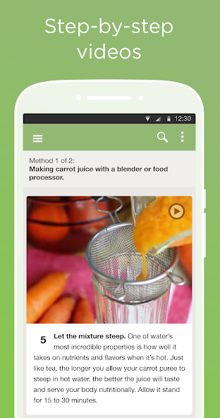

我妈周六突然说要来吃晚饭——那个下午我靠 wikiHow 救了场
一个毫无烘焙经验的上班族，在妈突然到访的紧急时刻，靠 wikiHow 从零烤出了一个像样的海绵蛋糕。这篇文章讲的不是烘焙技巧，是我对"说明书型内容"的重新认识。
周六下午三点的崩溃
那天我正窝在沙发上刷短视频，手机突然响了——是我妈的微信语音："闺女，下午没事吧？我跟你爸去公园逛，逛完顺路来你那儿吃晚饭。"
我脑子里嗡的一声。冰箱里只有两个鸡蛋、半盒牛奶和一袋低筋面粉——还是半年前凑满减买的，一直没拆封。更要命的是，我这辈子只烤过一次东西，是去年双十一跟风买的空气炸锅，烤了三次鸡翅就闲置了。
硬着头皮回了句"好啊妈，我给你们烤个蛋糕"，挂了电话之后开始搜方子。
我手机里收藏了三四个美食博主，平时刷他们的短视频觉得都挺像回事——"三个鸡蛋""少许白糖""大概这么多牛奶"。真到了动手的时候，我才发现短视频博主的"适量"和"少许"是多么坑爹的表述。打发蛋白要多久？烤箱温度调多少？低筋面粉要不要过筛？每个问题的答案都是"凭感觉"。
翻了五分钟收藏，我又去某红书搜"新手零失败蛋糕"，出来的图文笔记倒是有步骤图，但评论区全是"我按这个做了还是塌了""楼主你是不是漏写了什么"。越看越慌，我甚至开始想，要不还是点个外卖蛋糕吧。
朋友甩给我的三个字母
就在我准备打开外卖软件的时候，朋友圈刷到一条动态——大学舍友晒了张她烤的司康，配文是"终于烤成功了，感谢 wikiHow 的第17篇食谱"。
我当时以为 wikiHow 是她新关注的美食博主，点进评论区想问链接，结果看到另一个同学回复"wikiHow 不是博主啦，是一个讲各种 How to 的网站"。
哦？我搜了一下wikiHow官网的名字，出来的不是美食账号，是一个正经的应用商店页面。安装包才3MB多一点——这在我手机里那些动辄上百MB的应用堆里，小得有点反常。下载、安装、打开，整个过程不到一分钟，我甚至以为是不是下载了个壳。
搜到了一篇不一样的指南
打开应用，搜索框就在首页最显眼的位置。我输入"烤海绵蛋糕"，出来的第一条结果是"如何制作海绵蛋糕"。
点进去之后我愣住了——这不是我在美食博主那里见过的那种"材料清单+小贴士"格式。页面顶部先给了我一段视频，不到两分钟，把整个烤蛋糕的流程走了一遍：打蛋白、拌面糊、装模、入烤箱。视频下面才是编号的步骤，从第1步到第12步，每一步都有配图，而且每个数字都精确到让人安心——"打蛋白大约5分钟，直到提起打蛋器有小弯钩""烤箱预热至180°C，烤25分钟"。

我注意到这篇指南有两种方法——"经典海绵蛋糕"和"无黄油版本"，作者还在页面顶部标了"已由烘焙专家评审"。这是我第一次在食谱里看到"专家评审"四个字，之前在其他平台翻到的方子，作者头衔最多就是"美食爱好者"。
照着步骤做，中间翻车了一次
我选了无黄油版本——刚好家里没黄油，省得再跑一趟超市。按照指南的第3步，把三个鸡蛋的蛋清蛋黄分离，蛋清放进无水无油的不锈钢碗里。指南特别强调了"碗里不能有一点蛋黄或油，否则打不发"，我赶紧把碗又洗了一遍擦干才敢用。
打发蛋白这步卡了我十分钟。指南说"大约5分钟"，我打了8分钟，蛋白还是稀稀的。翻到指南底部的"常见问题"板块——这种结构化的错误解决方案也是wikiHow的特色，wikiHow文档里有更完整的说明——第一条就是"蛋白打不发怎么办"："鸡蛋提前冷藏30分钟再分离"。我恍然大悟，刚才用的是常温鸡蛋，赶紧把蛋黄先放一边，把蛋清碗塞进冰箱，等了半小时再拿出来打。这次只花了6分钟，提起打蛋器的时候真的出现了小弯钩。
拌面糊的时候我特别小心——指南说"不要画圈搅拌，要用切拌法"，旁边还配了一张手拿着刮刀在面糊里切来切去的示意图。之前看的短视频博主只说了"搅拌均匀就行"，没说不能画圈，怪不得我上次做的东西发不起来。
入烤箱，180°C，25分钟。我站在烤箱旁边，眼睛盯着玻璃门里面糊慢慢膨胀、表面变成金棕色，那感觉比刷到十个搞笑短视频都踏实。
吃完蛋糕之后的事
我爸妈吃完蛋糕，我妈说"比你上次烤的鸡翅强多了"——她没听出来我上次根本没烤过蛋糕。送走他们之后，我把刚才用的那篇指南标记了离线收藏，又随便搜了几个"怎么擦不锈钢水壶""怎么给植物浇水不烂根"的指南，发现这个应用远不止美食。
后来我才慢慢明白，wikiHow 和我之前用的所有"生活技巧"类内容都不一样。它不追求"看起来厉害"，只追求"让你能做成"。每一篇指南的结构都是固定的：先给视频建立整体印象，再给编号步骤配精确数字，底部有常见失败原因和替代方案。不鼓励也不吓唬，就是干巴巴地告诉你要做什么、怎么做、出问题了怎么办。

我还发现了几个有意思的细节：这个应用不做内容墙，不注册也能完整看完所有指南，离线收藏也是免费的。应用体积小到只有3MB左右，因为它只负责渲染界面，18万篇指南的全部内容都在服务器上按需加载——对我这种手机里装了一堆东西只剩几个GB空间的老用户来说，这个设计特别友好。
之前我每天睡前刷十五分钟短视频，现在改成先看两三篇wikiHow的随机指南。不是说短视频不好，而是每次看完wikiHow我都觉得自己今天好像学会了什么——可能是擦水壶的技巧，可能是给绿萝浇水的频率，而短视频刷完之后我通常记不住刚才看了什么。
回到那个周六下午的事：我本来想随便应付一下，结果靠一个应用烤出了像样的东西，还第一次意识到原来"教程"这个东西也可以做得这么诚实。这套资料在 GitHub、Gitee 和 GitCode 都能拿到——维护者说文档会定期更新，内容的时效性比我收藏的那些两年前的短视频靠谱多了。